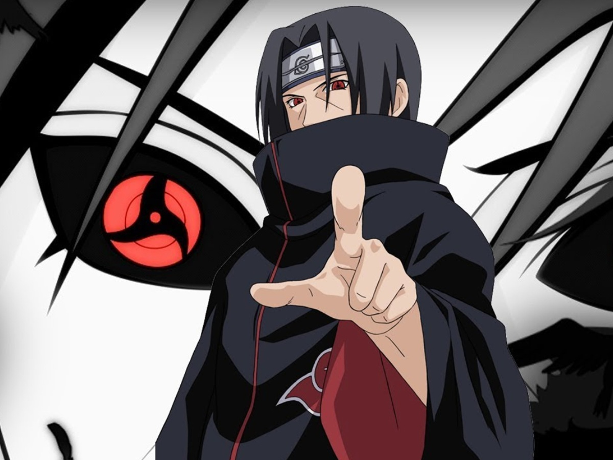
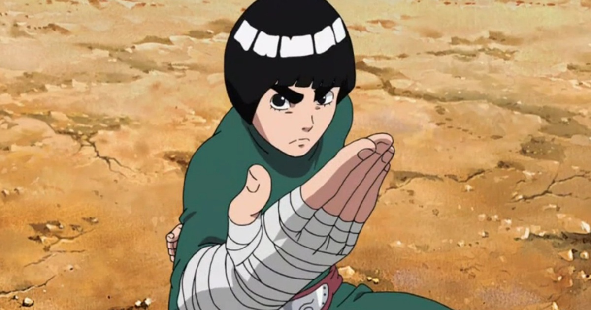
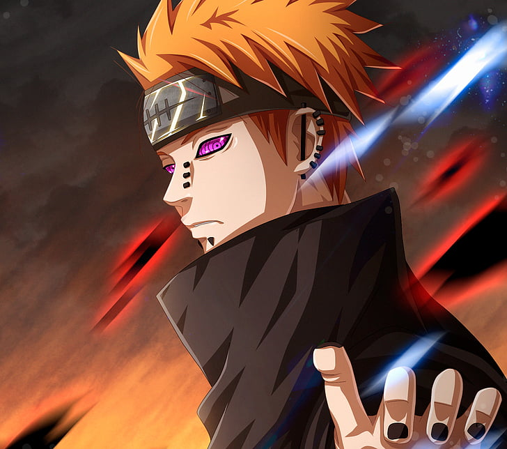
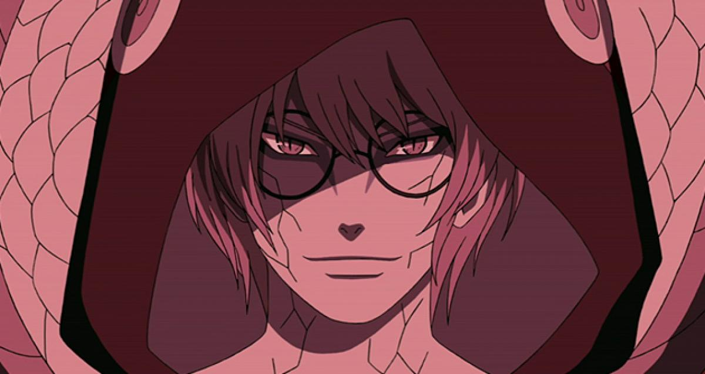
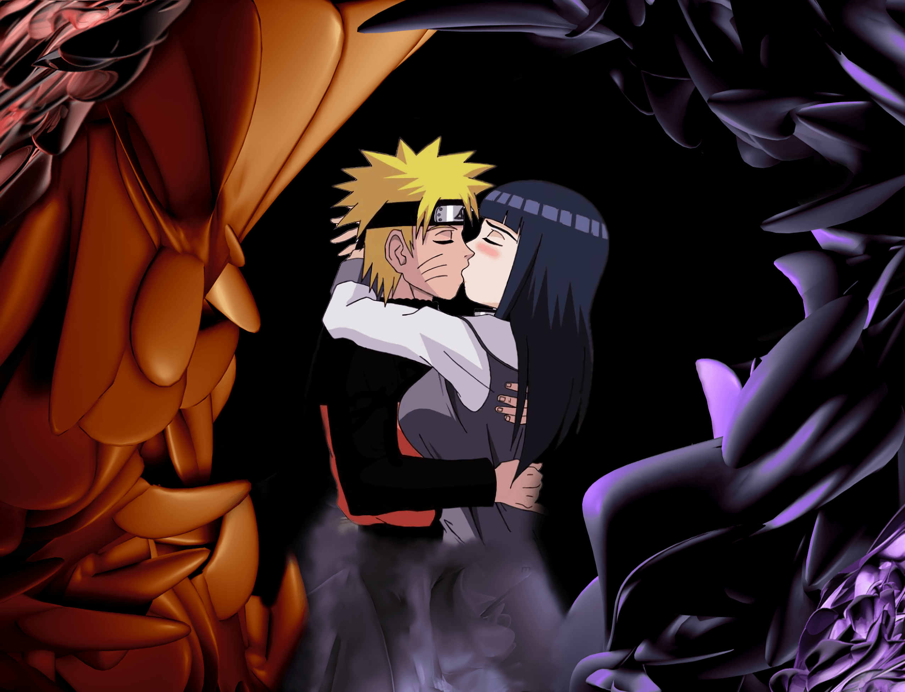

las mejores frases de Naruto, la serie de manga escrita y dirigía por Masashi Kishimoto, que relata la historia de un joven ninja que aspira a convertirse en Hokage, en la aldea oculta de la hoja.
Su propósito es convertirse en un personaje importante y reconocido en su aldea.
Esta estremecedora historia está llena de enseñanzas y sabiduría oriental.
No puedes perder la oportunidad de disfrutar de esta colección de frases de estos personajes.
-Una vez que cuestionas tus propias creencias, estás acabado-Naruto Uzumaki.
-Un día me gustaría ser apreciado por los demás-Gaara.
-Miedo. Eso es lo que vivimos. Y lo vivimos todos los días. Solo en la muerte estamos libres del miedo-Neji Hyuuga.
-Incluso el más fuerte de los oponentes siempre tiene una debilidad-Itachi Uchiha.

-¡Para! ¿Cómo te atreves a desobedecer a un oponente que peleó con todo lo que tenía?-Rock Lee.

-Si no compartes el dolor de alguien, nunca podrás entender a los demás-Nagato.

-El amor engendra sacrificio, que a su vez genera odio. Es entonces cuando conoces el dolor-Pain.
-¿Acaso confesar que hay algo que no puedes hacer no es lo mismo que darse por vencido?-Kabuto.

-El trabajo duro es inútil para aquellos que no creen en sí mismos-Naruto Uzumaki.

-Fracasar no te da una razón para renunciar mientras tengas fe-Naruto Uzumaki.
-La gente no puede ganarle a su propia soledad-Gaara.
-Es solo a través de los ojos de los demás que nuestras vidas tienen algún significado-Haku.
-Los que no son capaces de conocerse a sí mismos están condenados a fracasar-Itachi Uchiha.
-A nadie le importaba quién fuera hasta que me puse una máscara-Obito Uchiha.
-¿Crees que morir juntos pueda ser una especie de “trabajo en equipo”?-Madara Uchiha.
-Tienes razón, todos los esfuerzos son inútiles si no crees en ti mismo-Might Guy.
-Las personas cambian o mueren antes de hacerlo. Es uno o el otro-Orochimaru.
-La diferencia entre la estupidez y la genialidad, es que la genialidad tiene sus límites-Neji Hyuuga.
-Poder perdonar y ser consciente de uno mismo, eso es lo que realmente significa ser fuerte-Itachi Uchiha.
-Nunca te rindas sin haberlo intentado. ¡Haz lo que puedas, no importa cuán pequeño sea el efecto que pueda tener!-Ōnoki.
-La vida de la gente no termina cuando mueren. Termina cuando pierden la fe-Itachi Uchiha.
-No es porque sea perezoso, sino que en realidad no me importa-Nara Shikamaru.
-No es la cara lo que hace que alguien sea un monstruo, son las decisiones que uno toma en su vida-Naruto Uzumaki.
-Hemos caminado a través de la oscuridad de este mundo, es por eso que somos capaces de ver incluso una partícula de luz-Gaara.
-Es demasiado tarde para arrepentirse. La realidad se mueve con crueldad-Tobi.
-El dolor es la manera de traer la paz-Pain.
-El poder no es la voluntad, es el fenómeno de hacer las cosas físicamente-Madara Uchiha.
-Un lugar donde alguien todavía piensa en ti es un lugar que puedes llamar hogar-Jiraiya.
-Los hombres no están destinados a perseguir la felicidad-Jiraiya.
-Ningún deseo se cumple en este mundo-Tobi.
-Si crees en tus sueños, te demostraré que los puedes lograr trabajando duro-Rock Lee.
-La gente comparte un destino común, la muerte-Neji Hyuuga.
-El amor es el cuidado y la devoción que sientes por los que te rodean-Yashamaru.
-En la vida nada bueno sale rápido-Nara Shikamaru.
-No sé quién es más patético, el tonto o los que le siguen-Jirobou.
-El rechazo hace a un hombre más fuerte-Jiraiya.
-Las enseñanzas que no hablan de dolor no tienen sentido-Itachi Uchiha.
-Su alma era tan pura como la nieve-Zabuza Momochi.
-¡Si no te gusta la mano con la que te trató el destino, lucha por conseguir una diferente!-Naruto Uzukami.
-Cuando te rindes, tus sueños y todo lo demás se han ido-Naruto Uzumaki.
-¿Cuál es el sentido de algo que desaparece tan pronto como nace?-Sasori.
-Conocer cómo se siente el dolor es lo que hace que tratemos de ser amables con los demás-Jiraiya.
-No hay ninguna ventaja por apresurar el paso a través de la vida-Nara Shikamaru.
-Es estúpido hablar de cosas que no eres. Sé tú mismo y estarás bien-Nara Shikamau.
-Las personas que siguen poniendo sus vidas en la línea de guerra para defender su fe se convierten en héroes y siguen existiendo en las leyendas-Naruto Uzumaki.
-Porque me salvaron de mí mismo, me rescataron de mi soledad. Ellos fueron los primeros en aceptarme por lo que soy. Ellos son mis amigos-Naruto Uzumaki.
-El rechazo es una parte de la vida de cualquier hombre. Si no puedes aceptar y dejar atrás el rechazo, o por lo menos utilizarlo como material para escritura, no eres un verdadero hombre-Jiraiya.
-Incluso el niño más ignorante e inocente, eventualmente, crecerá cuando aprenda cómo es el dolor verdadero. Afecta lo que dicen, lo que piensan y se convierten en personas reales-Pain.
-Es porque ayudamos cuando están en problemas que podemos contar con ellos para venir corriendo cuando los necesitamos-Nara Shikamaru.
-Los adultos son idiotas. Si realmente quieren poner fin a esta lucha sin fin, tienen que sentarse entre sí y llegar a una tregua-Tobirama Senju.
-He estado más tiempo que tú, chico. He visto muchos problemas. No eres el único que sabe lo que es perder a alguien-Hatake Kakashi.
-La pereza es la madre de todos los malos hábitos. Pero en última instancia, ella es una madre y debemos respetarla-Nara Shikamaru.
-Si los compañeros en los que confías se reúnen alrededor de ti, la esperanza puede tomar forma física y ser visible. Eso es lo que yo creo-Hatake Kakashi.
-Tus compañeros están contigo para compensar todo aquello que tú no puedes hacer y para evitar que ignores las cosas que realmente sí eres capaz de hacer-Itachi Uchiha.
-Parece que ninguno de nosotros ha llevado una vida encantadora, ¿verdad? Sin embargo, no es tan malo. Al menos tú y yo hemos tenido la suerte de encontrar nuevos compañeros para ayudar a llenar el vacío-Hatake Kakashi.
-Puedes robar el último bocado de mi mejor comida. Puedes burlarte de mí tanto como puedas. Pero si insultas a mi mejor amigo, voy a tener que detenerte-Choji Akamichi.
-Si el amor es solo una palabra, entonces ¿por qué duele tanto si te das cuenta de que no lo encuentras por ningún lugar?-Gaara.
-Entiendo ahora. Aunque tenga que tomas el fruto del diablo, tengo que conseguirme ese gran poder. Soy un vengador-Sasuke Uchiha.
-No soy nadie. No quiero ser nadie. Todo lo que me importa es completar el plan de la luna. Este mundo es completamente inútil. No queda nada más que miseria-Obito Uchiha.
-Cuando las aves capturadas se hacen más sabias, tratan de abrir la jaula con sus picos. No se dan por vencidos, porque quieren volar de nuevo-Genma Shiranui.
-Solo porque alguien es importante para ti, no significa necesariamente que esa persona sea buena-Gaara.
-¿Familia? Permítanme decirles qué tipo de vínculo tengo con ellos. ¡Para mí son solo trozos de carne unidos por el odio y la intención asesina!-Gaara.
-Ya te lo he dicho antes, soy un vengador. No me importa esta prueba, Chunin o lo que sea. ¿Soy fuerte? Esa es la respuesta que quiero-Sasuke Uchiha.
-¡Despierta a la realidad! Las cosas nunca salen según lo planeado en este mundo. Cuanto más tiempo vives, más te das cuenta de que en esta realidad solo existe el dolor, el sufrimiento y la futilidad-Madara Uchiha.
-A veces hay que lastimar para aprender, caer para crecer, perder para ganar, porque las lecciones más grandes de la vida se aprenden a través del dolor-Pain.
-No improvises en lo que no puedes controlar-Madara Uchiha.
-Algunas personas quieren poder y se enojan cuando no lo consiguen. Sacan su furia con todos los demás. Aunque no lo quieras, se convierte en una parte de ti-Hatake Kakashi.
-Soy Hatake Kakashi. ¿Cosas que me gustan y cosas que odio? No tengo ganas de decirte eso. ¿Mis sueños para el futuro? Nunca pensé realmente en eso. En cuanto a mis aficiones, tengo un montón de aficiones.
-Incluso los niños se ven obligados a crecer ante el dolor-Pain.
-Es parte de la naturaleza humana no darse cuenta del verdadero valor de algo, hasta que ese algo se ha perdido-Orochimaru.
-En la sociedad, los que no tienen muchas habilidades, tienden a quejarse más-Hatake Kakashi.
-Hablar de paz mientras se derrama sangre, es algo que solo los humanos pueden hacer-Madara Uchiha.
-Cuando la gente está protegiendo algo verdaderamente especial para ellos, raelmente pueden llegar a ser tan fuertes como pueden ser-Naruto Uzumaki.
-Es porque he experimentado el dolor en el pasado, que puedo considerar lo que será mejor para el futuro-Ohnoki.
-El poder real se forja a partir del deseo que arde en el corazón. Se aviva como una llama y comienza a arder con una intensidad apenas imaginada-Orochimaru.
-Cada uno de nosotros debe hacer lo que está en su poder. Si vamos a morir de todos modos, entonces es mejor morir peleando que no hacer nada-Sakura Haruno.
-Ahora siento que tal vez saber quién soy realmente es la clave para alcanzar la perfección. Porque eso significa conocer lo que puedo y no puedo hacer-Itachi Uchiha.
-Cuando las personas tienen opiniones diferentes, se debe considerar el voto de la mayoría-Naruto Uzumaki.
-Las leyendas del pasado lejano son siempre exageradas, pero eventualmente alguien las sobrepasa. Entonces nacen las nuevas leyendas-Shikaku Nara.
-¿Cuál es tu deseo? ¿Paz? ¿Dinero? ¿O el mundo? ¡Lo que deseas es algo que tienes que conseguir con tu propia fuerza!-Gamabunta.
-Si la responsabilidad del padre es proteger al niño, entonces mi responsabilidad es exceder al padre-Naruto Uzumaki.
-Las cosas que son más importantes no están escritas en los libros. Tienes que aprenderlas experimentándolas tú mismo-Sakura Haruno.
-Un shinobi sin nombre que protege la paz dentro de su sombra. Eso es un verdadero shinobi-Itachi Uchiha.
-No importa lo que hagas si vives y mueres como quieres. Sin embargo, no importa qué camino termines tomando, recuerda siempre proteger a las personas que son preciadas para ti-Hiruzan Sarutobi.
-Una sonrisa es la mejor manera de salir de un aprieto, incluso si es una sonrisa falsa. Sorprendentemente, todo el mundo la toma por su valor nominal-Sai.
-La emoción te conduce a odiar a los demás, y el odio te lleva de un conflicto a una guerra-Shimura Danzo.
-Una persona crece cuando es capaz de superar las dificultades. La protección es importante, pero hay algunas cosas que una persona debe aprender por su cuenta-Jiraiya.
-La verdadera belleza radica en cosas que duran para siempre, nunca se pudren ni se desvanecen-Sasori.
-Las personas se vuelven más fuertes porque tienen cosas que no pueden olvidar. Eso es lo que llamas crecimiento-Tsunade.
-Mi poder no es el Jutsu Rasengan o Sage o el Chakra de las Nueve Colas. Mi poder está aquí, en mi corazón-Naruto Uzumaki.
-Nunca ha sido “el que se convierte en Hokage será reconocido por todos”, es “el que es reconocido por todos, se convierte en el Hokage-Itachi Uchiha.
-Si quieres estar libre de tu sufrimiento, toma una decisión. Si renuncias a tu sueño, sufrirás más-Might Guy.
-Para escapar de un camino de soledad, uno tiene que trabajar duro, y forjar un nuevo camino con su propio poder-Gaara.
-Siempre es así. Las únicas cosas que puedo hacer por Naruto son las pequeñas cosas que alguien podría hacer-Sakura Haruna.
-Tal vez, solo tal vez, no hay ningún propósito en la vida. Pero si te demoras un poco más en este mundo, puedes descubrir algo de valor en la vida-Orochimaru.
-Detrás de esta máscara… ¡hay otra máscara! Muy bien, ¿eh?-Hatake Kakashi.
-¡Escúchate lloriqueando y quejándote como una pequeña víctima! Puedes llorar todo el día, en realidad no me importa, ¡no eres más que un cobarde!-Naruto Uzumaki.
-Mi lema es ser más fuerte que ayer, si es necesario estaré más fuerte que hace medio día, incluso más fuerte que hace un minuto-Rock Lee.
-No es prudente juzgar a los demás basándose en tus propias preconcepciones y en tus apariencias-Itachi Uchiha.